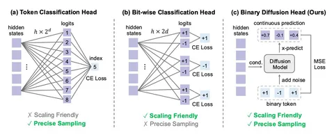

Сегодня разбираем статью на тему авторегрессионной генерации изображений. Исследования в этой области интересны с точки зрения практики: было бы здорово иметь мультимодальную модель на базе LLM, которая могла бы одновременно понимать тексты с картинками и генерировать семплы обеих модальностей.
За последний год ресерчеры из ByteDance подходили к этой задаче с разных сторон. В этот раз они попытались разработать produciton-scale t2i-модель, которая бы продуцировала картинки тем же образом, что и текст, а именно — авторегрессионно. Такой единообразный подход максимально удобен как во время обучения, так и на инференсе. Попробуем разобраться в особенностях модели BitDance и понять, действительно ли предложенная архитектура подходит для мультимодальной генерации.
Сначала в статье перечисляют проблемы AR-подходов в t2i-генерации, и основной называют дизайн картиночного токенизатора. В распространённых в сообществе VQ-VAE типа Cosmos картинки дискретизируются в кодбук на десятки тысяч токенов. Для изображений с их непрерывной структурой этого мало, поэтому реконструкция получается плохая.
Логично попробовать увеличить размер кодбука. Но при стандартном обучении возникает проблема codebook collapse: модель из-за особенностей оптимизационного процесса за время тренировки обучается использовать лишь небольшую часть токенов.
Побороть неприятный оптимизационный эффект помогает приём lookup-free-квантизации, предложенный в MAGVIT-v2. Вместо обучаемого кодбука используют неявный бинарный: каждый «пиксель» непрерывного выхода энкодера VAE просто поканально отображается в свой знак. Таким образом каждая spatial-координата латента может быть закодирована бинарным вектором размера D, где D — число каналов латента, то есть размерность кодбука становится равной 2^D. За счёт увеличения числа каналов D потенциально можно «раздувать» кодбук до огромных размеров и предположительно решить проблему качества реконструкций.
Однако при подсчёте энтропийного лосса на обучении VQ-VAE для элемента х приходится вычислять попарные расстояния с каждым элементом кодбука, что с ростом D делает такое обучение вычислительно невозможным. В решении этой проблемы авторы ссылаются на метод из своей прошлой статьи WeTok. Предлагается разбить каналы полученного латента на К непересекающихся групп, считать кросс-энтропийный лосс в рамках каждой группы независимо и затем суммировать.
В конце концов, этот набор трюков для обучения VQ-VAE позволяет масштабировать размеры кодбука вплоть до 2^256. И это положительно отражается на метриках реконструкций: для некторых вариантов бинарного токенизатора предложенной архитектруы получается добиться качества реконструкций по метрикам, сравнимого с непрерывным SDXL-VAE.
Но тут появляется другая проблема, о которой мы расскажем во второй части разбора.
Разбор подготовил
CV Time
